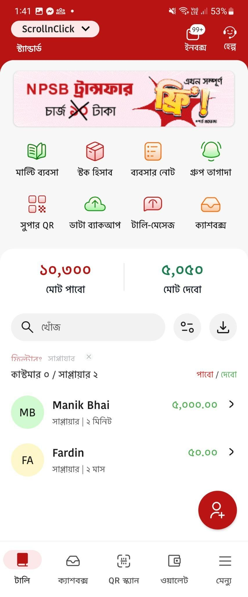
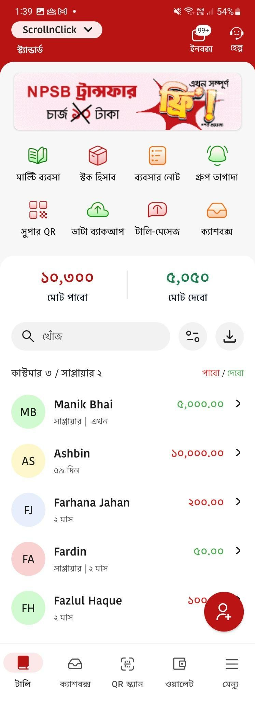
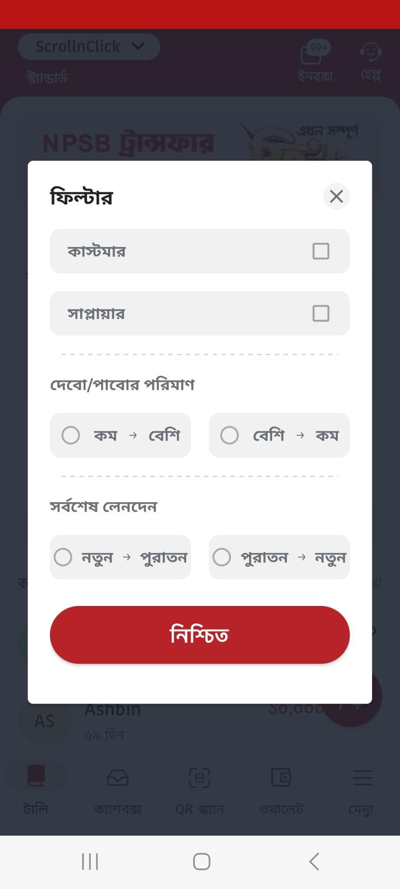

কাস্টমার ও সাপ্লায়ার লিস্ট
কাস্টমার লিস্ট
আপনার ব্যবসার পাওনার হিসাব এখন হাতের মুঠোয়
টালিখাতা আপনার দৈনিক লেনদেনকে সাজিয়ে রাখে এমনভাবে, যাতে আপনি সবসময় বুঝতে পারেন ঠিক কত টাকা পাওনা আছে এবং কোন কাস্টমারের কাছ থেকে কত টাকা পাবেন।
অ্যাপ ডাউনলোড
কাস্টমার ও সাপ্লায়ার লিস্ট
- ১কাস্টমারের তালিকা আলাদা করে দেখা যায়
- ২কার কাছ থেকে কত টাকা পাওনা আছে সহজেই বোঝা যায়
- ৩টাকা নেওয়ার পরিকল্পনা করা সহজ হয়
- ৪টালিখাতা অ্যাপ খুলুন
- ৫প্রথম স্ক্রিনেই আপনি কাস্টমার + সাপ্লায়ার মিলিয়ে পুরো লিস্ট দেখবেন
- ৬এবার ওপরের ডানদিকে থাকা ফিল্টার বাটনে চাপ দিন
- ৭“Customers” অপশনে টিক দিন
- ৮“নিশ্চিত” বাটনে চাপুন
- ৯বেশি থেকে কম অর্থাৎ যার কাছে সবচেয়ে বেশি টাকা দেওনা বা পাওনা আছে, তার নাম আগে দেখাবে।
- ১০কম থেকে বেশি অর্থাৎ যার কাছে সবচেয়ে কম টাকা দেওনা বা পাওনা আছে, তার নাম আগে দেখাবে।
- ১১নতুন থেকে পুরানো সর্বশেষ (নতুন) লেনদেনগুলো উপরে দেখাবে, এরপর ধীরে ধীরে পুরোনোগুলো দেখা যাবে।
- ১২পুরানো থেকে নতুন সবচেয়ে পুরোনো লেনদেনগুলো উপরে দেখাবে, এরপর নতুনগুলো নিচে দেখা যাবে।
- ১৩যে ফিল্টারটি আপনি নির্বাচন করেছেন তার পাশে লাল টিক বা লাল বিন্দু দেখা যাবে
- ১৪যেগুলো সিলেক্ট করা হয়নি সেগুলো ধূসর (grey) হয়ে থাকবে


যখন আপনি আবার আগের মতো কাস্টমার + সাপ্লায়ার মিলিয়ে পুরো লিস্ট দেখতে চান
এবার আবার আপনার অ্যাপটি স্বাভাবিক ডিফল্ট ভিউতে ফিরে আসবে।
কাস্টমার লিস্ট ফিচার কেন ব্যবহার করবেন?
কাস্টমার লিস্ট সম্পর্কিত সাধারণ জিজ্ঞাসা
১. কাস্টমার লিস্ট কি টালিখাতায় ফ্রি পাওয়া যায়?
হ্যাঁ, সম্পূর্ণ ফ্রি ব্যবহার করতে পারবেন।
২. শুধু কাস্টমার লিস্টই কি দেখা যায়?
হ্যাঁ, ফিল্টার থেকে “Customers” সিলেক্ট করলে শুধু কাস্টমারের তালিকা দেখা যায়।
৩. পাওনার পরিমাণ কি বড় থেকে ছোট বা ছোট থেকে বড় সাজানো যায়?
হ্যাঁ, ফিল্টারে গিয়ে আপনার পছন্দ অনুযায়ী সাজাতে পারবেন।
৪. পুরোনো লেনদেন কি আলাদা করে দেখা যায়?
হ্যাঁ, Oldest to newest অপশন সিলেক্ট করলেই হবে।
৫. ফিল্টার বন্ধ করলে কি আগের ভিউ ফিরে আসে?
হ্যাঁ, লাল ফিল্টারগুলো ধূসর করে “নিশ্চিত” দিলে ডিফল্ট ভিউ ফিরে আসে।
সাপ্লায়ার লিস্ট
কার কাছে কত দেবেন, সব হিসাব এখন এক জায়গায়
টালিখাতা আপনার ব্যবসার প্রতিদিনের দেনা–পাওনার হিসাব এমনভাবে সাজিয়ে রাখে যাতে আপনি সবসময় বুঝতে পারেন কাকে কত টাকা দিতে হবে এবং কোন লেনদেনটি এখনো বাকি রয়েছে।
ব্যবসার অন্যতম গুরুত্বপূর্ণ অংশ হলো: ✔ কোন সাপ্লায়ারের কাছে কত টাকা বাকি? ✔ কোন পণ্য নেওয়ার টাকা এখনও দেওয়া হয়নি? ✔ কোন লেনদেন পুরোনো হয়ে গেছে?
সাপ্লায়ার লিস্ট আপনাকে এই সব তথ্য পরিষ্কারভাবে দেখতে সাহায্য করে।
সাপ্লায়ার লিস্ট কী?
টালিখাতা অ্যাপ খুললেই প্রথম স্ক্রিনে আপনি কাস্টমার + সাপ্লায়ার মিলিয়ে পুরো লিস্ট দেখতে পাবেন। তবে শুধু সাপ্লায়ার দ্বারা বাকি থাকা দেনার হিসাব দেখতে চাইলে আলাদা করে সাপ্লায়ার লিস্ট ফিল্টার করতে পারবেন।
যখন আপনি আবার আগের মতো কাস্টমার + সাপ্লায়ার মিলিয়ে পুরো লিস্ট দেখতে চান
- ১ফিল্টার বাটনে চাপ দিন
- ২যেসব ফিল্টার লাল রয়েছে সেগুলোতে চাপ দিয়ে ধূসর করে দিন
- ৩“নিশ্চিত” এ ট্যাপ করুন
- ৪ব্যবসার হিসাব সবসময় পরিষ্কার থাকে
- ৫ভুলে যাওয়া পাওনা কমে যায়
- ৬কে টাকা দিলো, কে দেয়নি — তা সহজেই চেক করা যায়
- ৭লেনদেন ম্যানেজ করা অনেক সহজ হয়
- ৮সময় বাঁচে এবং হিসাব ভুলের সম্ভাবনা কমে
সাপ্লায়ার লিস্ট আপনাকে সাহায্য করে
কীভাবে সাপ্লায়ার লিস্ট দেখবেন
ধাপে ধাপে প্রক্রিয়া
এখন স্ক্রিনে কেবল সাপ্লায়ার লিস্ট দেখাবে এবং তাতে বুঝতে পারবেন কার কাছে কত টাকা আপনাকে দিতে হবে।
ফিল্টার দিয়ে সাপ্লায়ার লিস্ট সাজিয়ে দেখার সুবিধা
১. দেনার পরিমাণ অনুযায়ী সাজানো
২. সময় অনুযায়ী সাজানো
এতে আপনি সহজেই বুঝতে পারবেন— ✔ কোন দেনা সবচেয়ে বড় ✔ কোন দেনা অনেক দিন ধরে বাকি ✔ কোন লেনদেন আগে পরিশোধ করতে হবে
ফিল্টার নির্বাচনের ধরন
এটি বুঝতে সুবিধা হবে কোন ফিল্টার সক্রিয় আছে।
ফিল্টার বন্ধ করে ডিফল্ট ভিউতে ফিরবেন কীভাবে
সাপ্লায়ার লিস্ট আপনাকে সাহায্য করে
- ১কাকে কত টাকা দিতে হবে তা পরিষ্কারভাবে বুঝতে
- ২পুরোনো দেনা আগে পরিশোধ করতে
- ৩ব্যবসার ব্যয় নিয়ন্ত্রণে রাখতে
- ৪টালিখাতা অ্যাপ খুলুন
- ৫প্রথম স্ক্রিনে কাস্টমার + সাপ্লায়ার মিলানো সম্পূর্ণ লিস্ট দেখবেন
- ৬ওপরের ডানদিকে থাকা ফিল্টার বাটনে চাপ দিন
- ৭এবার “Suppliers” অপশনে টিক দিন
- ৮“নিশ্চিত” এ ক্লিক করুন
- ৯Highest to lowest (সবচেয়ে বেশি দেনা আগে)
- ১০Lowest to highest (সবচেয়ে কম দেনা আগে)
- ১১Newest to oldest (নতুন লেনদেন আগে)
- ১২Oldest to newest (পুরোনো লেনদেন আগে)
- ১৩কোনো ফিল্টার সিলেক্ট করলে তার পাশে লাল টিক বা লাল ডট দেখা যাবে
- ১৪সিলেক্ট না করা ফিল্টারগুলো ধূসর (grey) থাকবে
যখন কাস্টমার + সাপ্লায়ার মিলানো আগের ভিউতে ফিরতে চান
এবার অ্যাপ পূর্বের ডিফল্ট ভিউতে ফিরে আসবে।
সাপ্লায়ার লিস্ট ফিচার কেন ব্যবহার করবেন?
সাপ্লায়ার লিস্ট সম্পর্কিত সাধারণ জিজ্ঞাসা
১. সাপ্লায়ার লিস্ট কি ফ্রি?
হ্যাঁ, সম্পূর্ণ ফ্রি ফিচার।
২. শুধু সাপ্লায়ার লিস্ট দেখা যাবে?
হ্যাঁ, ফিল্টারে “Suppliers” সিলেক্ট করলে শুধু সাপ্লায়ারের তালিকা দেখা যাবে।
৩. দেনার পরিমাণ কি সাজানো যায়?
হ্যাঁ, Highest to lowest বা Lowest to highest সিলেক্ট করে সাজাতে পারবেন।
৪. নতুন বা পুরোনো লেনদেন কীভাবে দেখব?
ফিল্টারের সময় অনুযায়ী সাজানোর অপশন নির্বাচন করলেই হবে।
৫. ফিল্টার বন্ধ করলে কি সব লিস্ট আবার দেখা যাবে?
হ্যাঁ, লাল ফিল্টারগুলো ধূসর করে “নিশ্চিত” দিলে ডিফল্ট ভিউতে ফিরে যাবে।
যখন কাস্টমার + সাপ্লায়ার মিলানো আগের ভিউতে ফিরতে চান
- ১আবার ফিল্টার বাটনে চাপ দিন
- ২যেসব ফিল্টার লাল আছে সেগুলোতে চাপ দিয়ে ধূসর করে দিন
- ৩“নিশ্চিত” এ ট্যাপ করুন
- ৪কার কাছে কত টাকা দিতে হবে সব পরিষ্কারভাবে বোঝা যায়
- ৫পুরোনো দেনা সম্পর্কে ভুলে যাওয়া কমে
- ৬ব্যয় পরিকল্পনা করা সহজ হয়
- ৭ব্যবসার হিসাব সুশৃঙ্খল থাকে
- ৮বড় ভুল ত্রুটি বা হিসাবের অমিল এড়ানো যায়